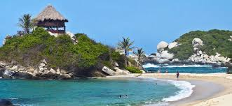
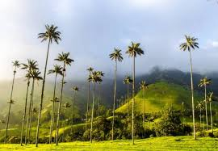
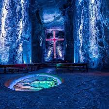
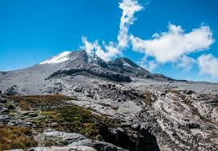
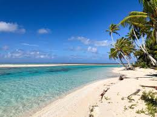

|
TOUR 1 |
TOUR 2 |
TOUR 3 |
TOUR 4 |
TOUR 5 |
| LUGAR |
PARQUE NACIONAL NATURAL TAYRONA |
VALLE DEL COCORA |
CÁTEDRA DE SAL DE ZIPAQUIRA |
PARQUE NACIONAL NATURAL DE LOS NEVADOS |
ISLA DE SAN ÁNDRES |
| UBICACIÓN |
Departamento de Magdalena- Costa Caribe |
Se encuentra a unos 24 kilómetros al noreste del municipio de Salento, en el departamento de Quindío |
Parque de la Sal, Zipaquirá, Cundinamarca, aproximadamente 48 kilómetros al norte de Bogotá. |
Se encuentra en la región central de los Andes colombianos, abarcando los departamentos de Caldas, Risaralda, Quindío y Tolima. |
Situada en el mar Caribe, aproximadamente a 750 km al noroeste de la costa continental de Colombia |
| ACTIVIDADES PARA HACER |
Senderismo por la selva Natación en las playas de arenas blancas Snorkel en arrecifes de coral Observación de vida silvestre |
Senderismo: Hay varias rutas que ofrecen vistas espectaculares del valle y las famosas palmas de cera.
Cabalgatas.
Avistamiento de Aves: El área es rica en biodiversidad, lo que la convierte en un lugar ideal para el avistamiento.
Camping: Hay áreas designadas para acampar y disfrutar de la naturaleza.
Visita a fincas cafeteras: En los alrededores del valle, puedes visitar fincas cafeteras para aprender sobre el proceso de producción del café.
Puente de la Carcelería: Un recorrido por un puente colgante en medio de la naturaleza. |
Visita a la Catedral de Sal: Un recorrido por la catedral subterránea, que incluye varias estaciones de la cruz, una gran cúpula, un coro y una nártex.
Show de luces: Una presentación de luces y sonido dentro de la catedral.
Museo de la Salmuera: Información sobre la historia y proceso de extracción de sal.
Ruta del Minero: Una experiencia interactiva que permite a los visitantes experimentar las condiciones de trabajo de los mineros.
Película en 3D: Una película sobre la historia de la catedral y la minería de sal.
Compras y Gastronomía: Tiendas de recuerdos y restaurantes. |
Senderismo y trekking: Caminatas a diversos puntos como el Nevado del Ruiz, Nevado del Tolima, y el Nevado de Santa Isabel.
Montañismo: Escaladas a las cumbres nevadas.
Observación de flora y fauna: El parque es hogar de especies como el cóndor de los Andes, osos de anteojos y muchas plantas endémicas.
Termalismo: Visita a las termales naturales en las cercanías del parque.
Fotografía: Paisajes impresionantes y biodiversidad única.
Camping: Hay zonas designadas para acampar dentro del parque. |
Playa Spratt Bight: Relájate en esta hermosa playa de arena blanca y aguas cristalinas.
Johnny Cay: Excursión a este cayo cercano con playas de arena blanca y restaurantes locales.
Hoyo Soplador: Un fenómeno natural donde el agua y el aire son expulsados por un agujero en las rocas.
Acuario Natural y Mantarrayas: Snorkel y natación con mantarrayas en un acuario natural.
Laguna Big Pond: Visita esta laguna de agua dulce con iguanas y aves.
Cueva de Morgan: Explora esta cueva histórica que se dice fue utilizada por el pirata Henry Morgan.
Tours de Snorkel y Buceo: Descubre la diversidad marina alrededor de los arrecifes de coral. |
| FOTOS |
 |
 |
 |
 |
 |
| COSTOS DE VISITA (Esta en $ Colombianos) |
El ingreso al parque tiene un costo de: Alrededor de $53550 o $15 Dólares para extranjeros Para nacionales $23.500 o $6,5 Dólares Esto puede variar según temporada y aumentar sí ingresa con vehículo. Recuerde que es el horario continuo de 7 AM a 6 PM |
Entrada al Valle de Cocora: Generalmente, la entrada es gratuita, pero algunas rutas de senderismo pueden requerir un pequeño pago (alrededor de $3,000 a $5,000 por persona).
Guías: Contratar un guía puede costar entre $50,000 y $100,000 dependiendo del tiempo y la ruta elegida.
Alquiler de Caballos: Aproximadamente $50,000 por hora.
Camping: Si decides acampar, puede costar alrededor de $10,000 a $20,000 por persona por noche. |
Entrada general: Aproximadamente $60,000 (puede variar según la temporada y descuentos disponibles).Paquete completo: Incluye todas las actividades y puede costar alrededor de $80,000. |
Entrada al parque: Aproximadamente $50,000 para extranjeros y $25,000 para nacionales. Los estudiantes y menores de edad suelen tener tarifas reducidas.Guías: Contratar un guía local puede costar entre $100,000 y $200,000 por día.
Camping: Entre $15,000 y $30,000 por noche.
Tours organizados: Pueden variar entre $300,000 y $800,000 dependiendo del itinerario y duración. |
Entrada a la Isla: Aproximadamente $123,000 (USD 30) por la tarjeta de turismo.Alojamiento:Hostales: $100,000 - $200,000 por noche (USD 25 - 50).Hoteles: $300,000 - $800,000 por noche (USD 75 - 200).
Comida: $40,000 - $100,000 por día (USD 10 - 25).
Tours y Actividades:Johnny Cay y Acuario: $80,000 - $120,000 (USD 20 - 30), Snorkel/Buceo: $100,000 - $300,000 (USD 25 - 75). |
| MEDIOS DE TRANSPORTE |
Desde Santa Marta:Bus o Colectivo: Salen desde el mercado público de Santa Marta hacia la entrada principal del parque (El Zaino). Costo: Aproximadamente $10,000 por trayecto.O en taxi: Puede costar entre $100,000 y $150,000 por trayecto. |
Desde Salento: Se puede tomar un jeep (conocido localmente como "Willys") desde la plaza principal de Salento hasta el Valle de Cocora. El viaje dura aproximadamente 30 minutos.
Costo del Jeep: Alrededor de $4,000 a $8,000 por persona por trayecto. |
Bus desde Bogotá:des la terminal de Transporte de Bogotá o estaciones en la Calle 170.Costo: Aproximadamente $8,000 - $12,000 por trayecto.
Tren Turístico de la Sabana:Lugar de salida: Estación de la Sabana en Bogotá.Costo: Aproximadamente $60,000 - $70,000 ida y vuelta.
Taxi o Uber desde Bogotá:Costo: Aproximadamente $120,000 - $150,000 por trayecto.Duración: 1 a 1.5 horas. |
Desde Bogotá:Avión: Vuelos a Manizales, Pereira o Armenia. Costos desde $150,000 a $400,000 ida y vuelta.Posteriormente bus con costos entre $60,000 y $100,000por trayecto.
Desde las ciudades de Manizales, Pereira o Armenia:Transporte terrestre: Buses locales o colectivos hacia los puntos de entrada del parque, como el sector de El Cedral en Manizales o El Rancho en Pereira. Costos entre $10,000 y $40,000. |
DEntro de la isla se pueden: alquiler de carritos de golf: $150,000 - $200,000 por día (USD 37 - 50), o tomar taxis: $20,000 - $50,000 por viaje (USD 5 - 12.5). |
| COSTO TOTAL |
Entrada (extranjero): $66,500 +Transporte ida y vuelta desde Santa Marta (bus): $20,000 +Transporte interno (microbús y caballo): $35,000 +Alojamiento (una noche en camping): $20,000+Comida (dos comidas): $40,000 +Otros gastos (souvenirs, snacks, etc.): $20,000=
Total estimado para un día y una noche: $201,500 (aproximadamente). |
El costo total puede variar dependiendo de las actividades que elijas realizar. A continuación, un estimado básico para un visitante:
Transporte (Ida y vuelta en jeep desde Salento): $8,000 - $16,000 + Senderismo y entrada a rutas especiales: $5,000 - $10,000+ Comida y bebidas: Aproximadamente $20,000 - $50,000+ Guía (opcional): $50,000 - $100,000+ Cabalgata (opcional):$50,000 por hora+ Camping (opcional): $10,000 - $20,000 por noche = $193,000 y $296,000 (aproximadamente entre USD 50 y USD 75) |
Por entrada y transporte puede ir desde $76000 - $360000 |
Transporte: Avión (ida y vuelta): $300,000 +Bus desde la ciudad de llegada al parque: $20,000 +Entrada al parque: $50,000+ Guía (opcional): $150,000+Camping (2 noches): $50,000 +Alimentación y extras: Aproximadamente $100,000= Total aproximado: $670,000 |
Supongamos una visita de 4 días y 3 noches para una persona, saldría a: Vuelo desde Bogotá: $700,000 (USD 175)+Tarjeta de Turismo: $123,000 (USD 30)+Alojamiento en Hostal: $ 450,000 (USD 112.5) por 3 noches+ Comida: $200,000 (USD 50) por 4 días+Tours y Actividades:$200,000 (USD 50)+Transporte en la Isla: $200,000 (USD 50)=Total Aproximado: COP 1,873,000 (USD 467.5) |